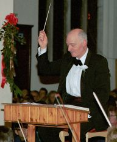
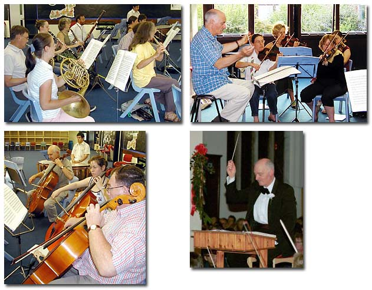

Playing
Player vacancies: We often have vacancies for players, who should be Grade VII+ of the Associated Board of Examiners. String and brass players in particular are always welcome.
Student Sponsorship: We particularly encourage students to join the orchestra under our student sponsorship programme.
Musical Director
Our conductor is Reginald Searle, who graduated from the Royal School of Music in 1963. He has now retired and this has allowed him to concentrate on writing more music. St Neots Sinfonia has premiered several of his works.
He taught in two London schools and worked part time in the music profession, singing a range of music from opera to television variety shows. He moved to Suffolk and taught for five years before taking up the post Director of Music at Longsands School, St Neots.
He founded the Longsands Choral Society in 1971 which soon became independent under its present name St Neots Choral Society.
He changed to teaching mathematics in 1975 when he became a Housemaster at the school, and returned to solo singing. In 1989 he founded the St Neots Sinfonia.
St Neots Sinfonia - a Friendly Orchestra
We rehearse Tuesday evenings during school term time at Eynesbury Junior School, Montagu Street, Eynesbury from 7:45 PM to 9:30 PM. We pride ourselves on being a friendly orchestra.
